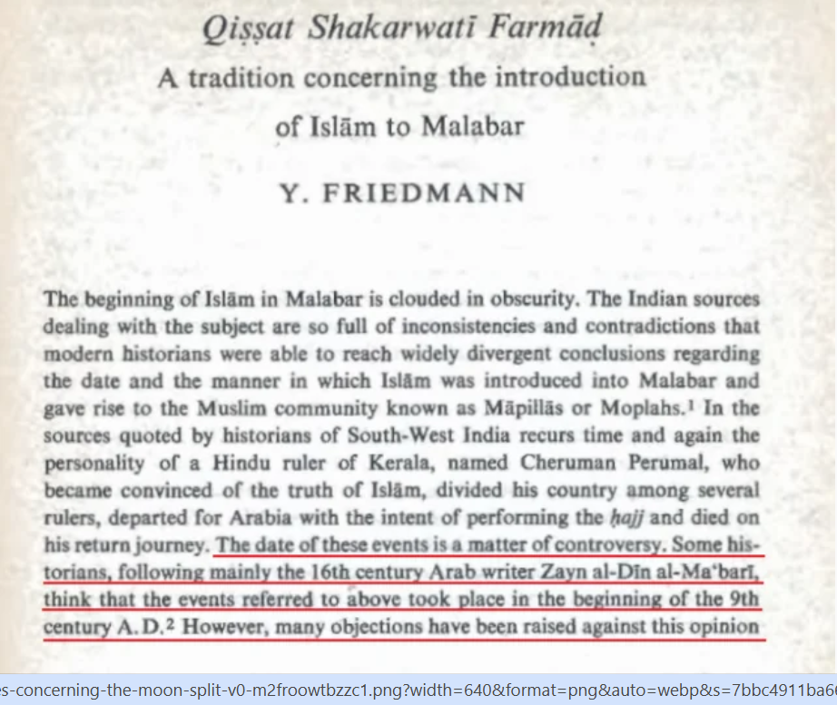
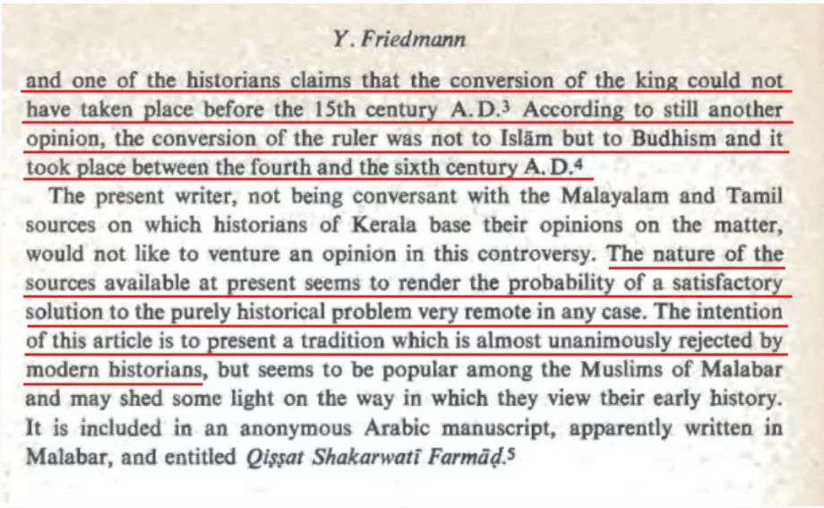
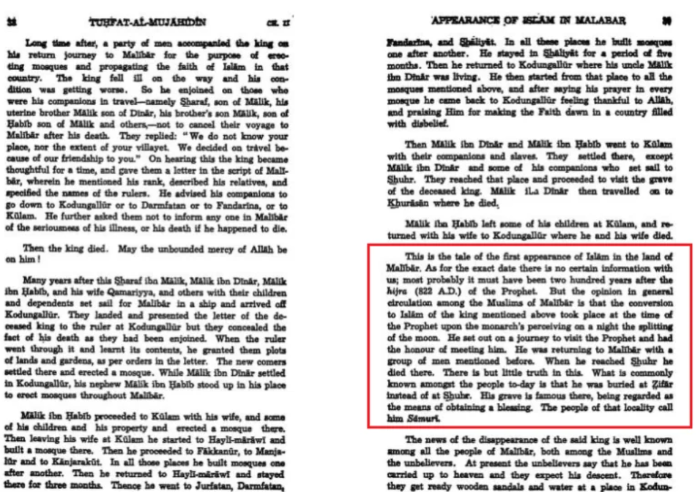
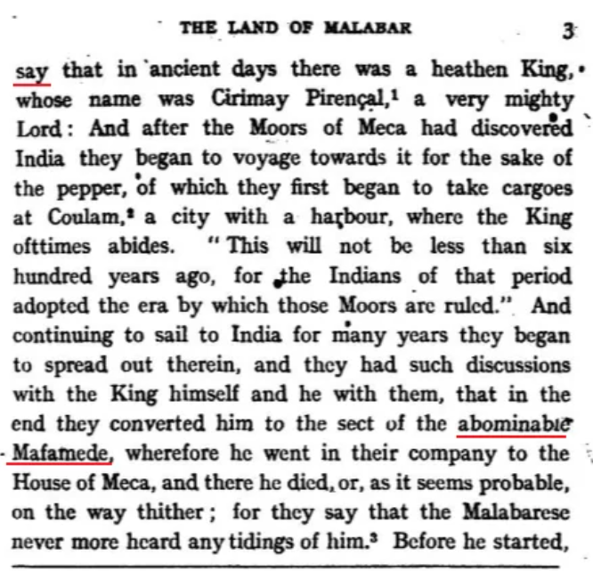
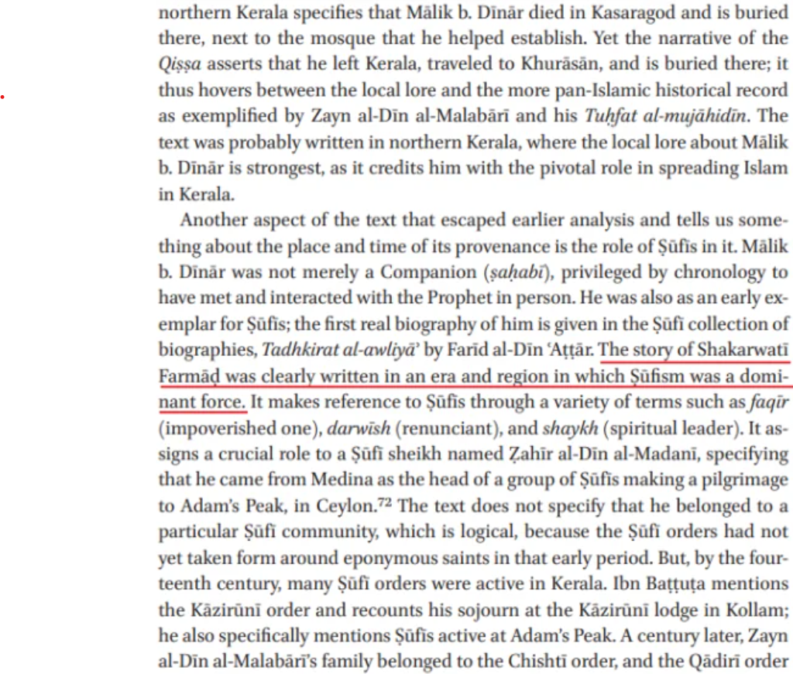

The Fabricated Story of Indian King:
This is a ridicolous story, which is 100% fabricated. PROOF.
Original Video: Prophet Muhammad's ﷺ Miracle of the Splitting of the Moon | The Evidence of the Split of the Moon
The segment of interest is from 23:20 onwards. There is no doubt that a manuscript containing the story of the Indian king is a genuine manuscript, as confirmed by the British Library. What we are interested in is whether the contents of the story are true, rather than the genuineness of the manuscript. Sheikh Uthman explains that he reached out to the National Digital Library of India to ask them about additional documentation of the story. The response email states that an English translation of the Qissat exists, authored by Dr Yohanan Friedman, in the Israel Oriental Studies Journal.
For some strange reason, Sheikh Uthman decides not to examine this translation further, because if he had, the rest of his video would have been rendered unnecessary. Dr Friedman's work is not just a translation, but a scholarly discussion of the source material and whether any authenticity can be ascribed to it. So let's take a look at the paper that I linked above. Right in the beginning, Dr Friedman laments how the sources dealing with the subject are "full of inconsistencies and contradictions" that historians are unable to form any agreement. Regarding the story of the Indian king, he explains that the dating of this story is a matter of controversy:


As we can see, Dr Friedman lists three widely different opinions of the story's dating, none of them overlapping with the prophethood years of Muhammad. This is already an issue for Sheikh Uthman, which is probably why he didn't share any of this with his Youtube audience.
It must be pointed out that historians are not rejecting this story because of their commitment to naturalism; they are rejecting it because the authorship and the dates of the manuscripts are completely unknown. The original stories have anonymous authors, so even if a modern historian believed in a God who split the moon, there would still be no reason for him to accept this Indian story due to its unknown origins.
The Sheikh continues reading the email. The email states that the story of the Indian king embracing Islam is "well documented in many manuscripts that are housed in the National Digital Library of India." Here we must pause and understand the wording used. The email states that the story is "well documented", not "well corroborated". This is important to note because to document a story means you are simply recording the story after hearing it from another source. It is possible for a story to be recorded a hundred times by different people and it would still have no bearing on the story's authenticity, because the story is simply being passed on from one person to the next as is.
A story is corroborated if we have more than one source from the time of the event itself. As we will divulge from this post, no such corroboration for this story exists. In fact, no one even knows who wrote the original story, and no one knows when it was written. No one even knows anything about this very king who the story is about. So corroboration is an impossibility.
The email continues by naming two more works that mention the story. The first being Tarikh Zuhur Al Islam Fil Malibar, which is labelled as "an early manuscript on the genesis of Islam in Kerala". There is a reason the librarian simply calls it "an early manuscript" instead of giving more details — and that is because the contents of this manuscript have never been confirmed to be authentic, and no one even knows the date it was written in.
The second work mentioned in the email is Tuhfat al-Mujahidin by Sheikh Zayn ud-Din. Once again, Shaykh Uthman doesn't care to examine the contents of the material he is being recommended. If he actually cared to read the Tuhfat al-Mujahidin, which can be done from here:
...then he would have known that Zayn ud-Din does not support the story at all. Instead, Zayn ud-Din claims that the Indian king converted to Islam in the 9th century, 200 years after the actual moon split story is said to have taken place. He rejects the original story as told in the Qissat Shakarwati Farmad, and is quoted as saying, "there is but little truth in this".

Moving on, the email then names four more personalities:
-
Hermann Gundert
-
Duarte Barbosa
-
João de Barros
-
Diogo do Couto
All four of these individuals lived after the 14th century, and they were simply recording the stories as local legends of the Indian people. Duarte Barbosa is even hostile to it, calling Muhammad the "abominable Mafamede". Yet again, if Shaykh Uthman had simply read the source material being recommended, he would have understood that these historians were simply documenting these stories for educational purposes. Barbosa starts his narration with the words "they say", implying that this is the story as it is believed by the locals.

Yet again, if Shaykh Uthman had simply read the source material being recommended, which you can do here:
...then he would have understood that these historians were simply documenting these stories for educational purposes. Barbosa starts his narration with the words "they say", implying that this is the story as it is believed by the locals.
We can now move on to modern scholarship around this story. It is strange that the National Library of India cited Dr Friedman's translation to Sheikh Uthman, which is from 1975. Dr Friedman's translation is only a summary of the story, rather than a full translation of the complete text. There is in fact a more recent work from 2017, authored by Scott Kugle and Roxani Elani Margariti, in which they have translated the entire story in its complete form for the first time.
As mentioned in their abstract, up till now "historians have dealt with such origin stories by transmitting them at face value, rejecting their historicity, or sifting them for kernels of historical truth."



 Hassan Radwan
Hassan Radwan